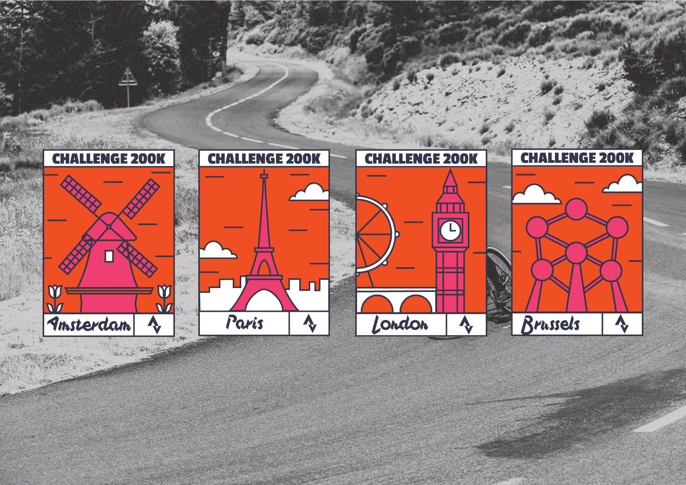
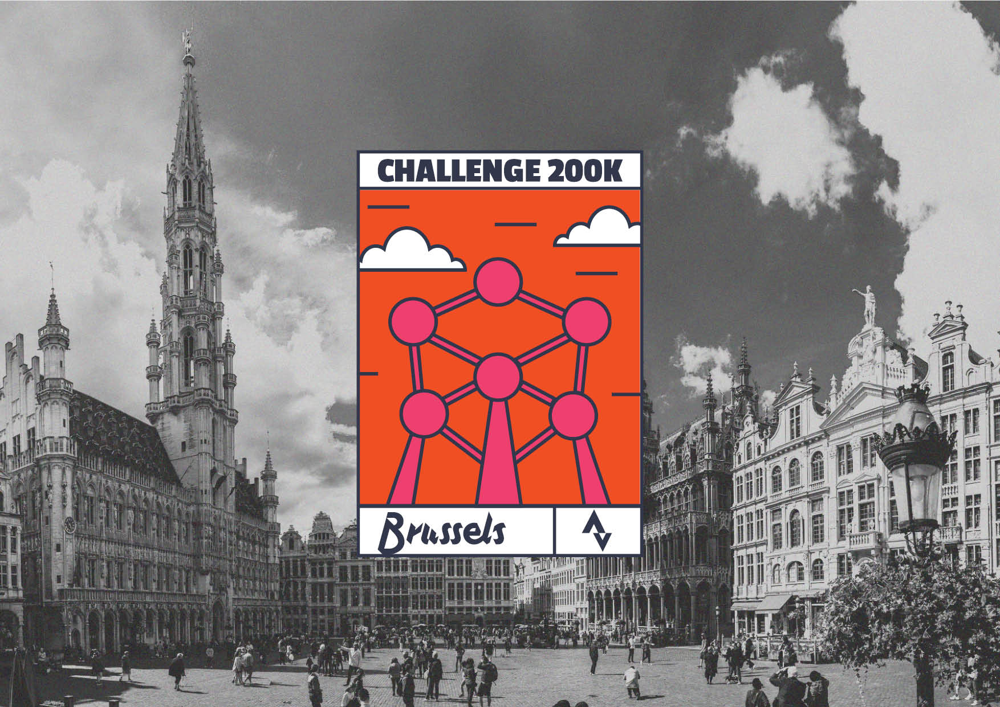
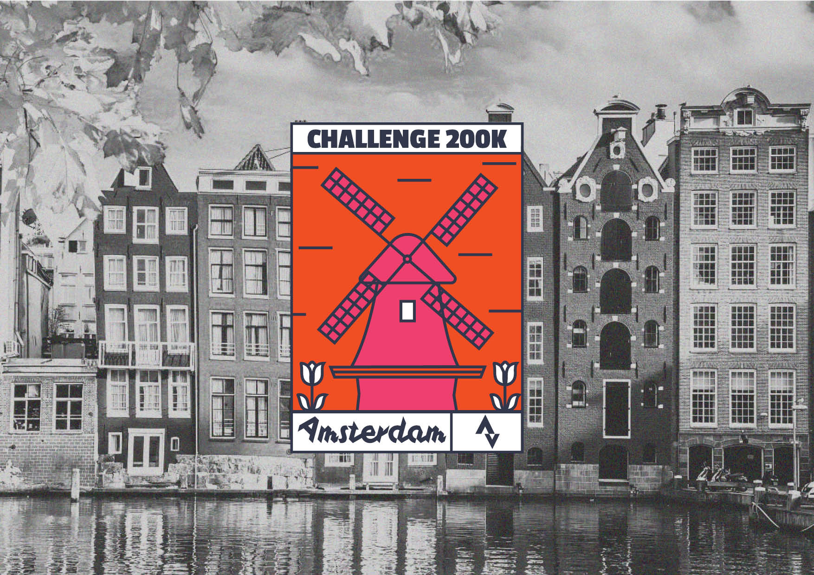
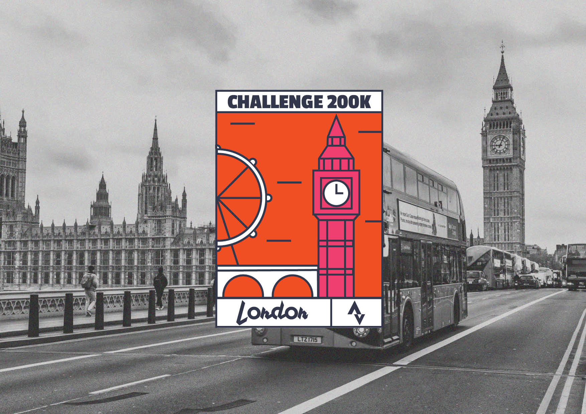
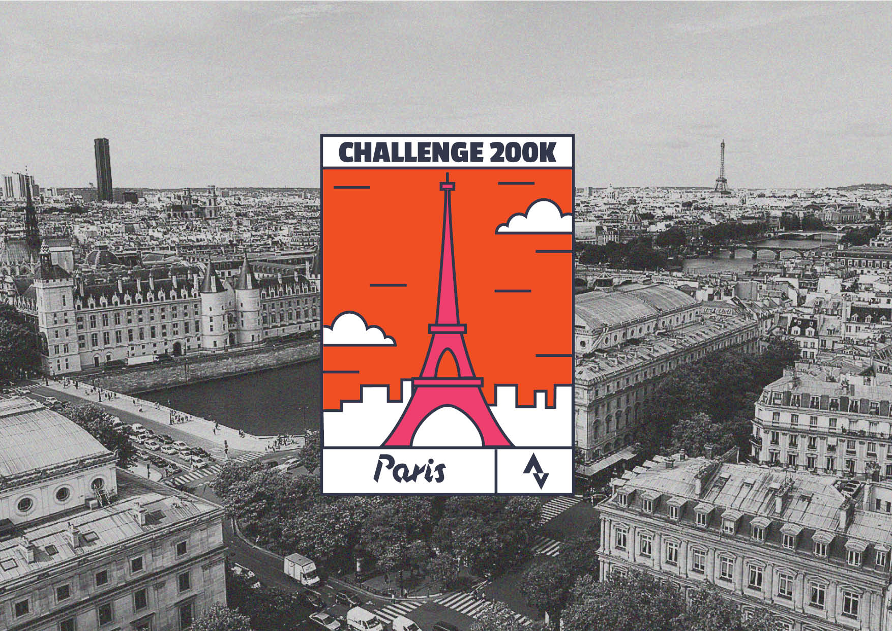
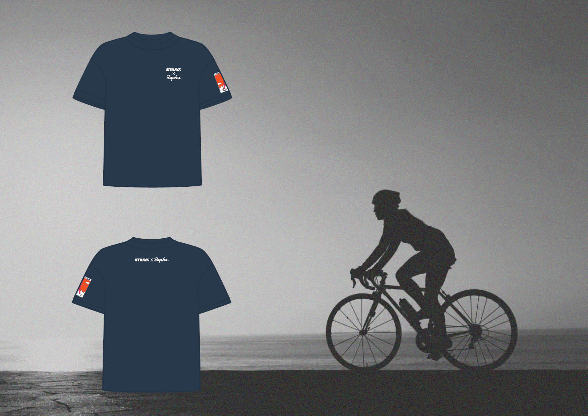

Strava X Rapha
→ As part of a fictional collaboration between the cycling accessories brand Rapha and the Strava app, we worked on four badges for a challenge, highlighting a contemporary sportsmanship spirit while representing the four cities.
     